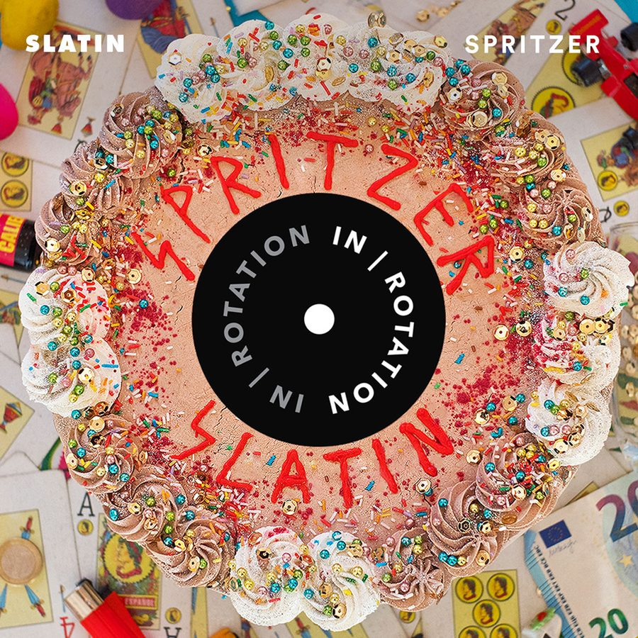

SLATIN Unleashes Slamming Debut EP ‘Spritzer / What You’ve Got’ on IN / ROTATION


SLATIN is coming to you from Spain via Russia, and he’s tipped as an ascending star in the bass house scene for 2018. The Russian-born, Madrid-based DJ/producer has released music on labels like Spinnin’ and Brooklyn Fire under different pseudonyms over the years. He is now channelling his musical concept into his SLATIN alias and is ready to unleash his debut EP.
Spritzer / What You’ve Got arrives on IN / ROTATION as a double A-side release, featuring two slamming cuts of driving house that are made for the main-room. It’s the result of SLATIN both focusing his production work in the studio, as well as the connection with the dancefloor he’s cultivated through his residency at Pacha nightclub in Madrid.
To mark the release of his new two-tracker, we reached out to find out more about SLATIN.
SLATIN’s Spritzer / What You’ve Got is available here.
You hail originally from Russia, though, now you’re based in Madrid. Tell our readers a little bit about your personal history and your journey to where you are now.
I started to get interested in music production in Russia, and then I moved to Spain to study. I liked Spain so much that I decided to stay. During my youth, I went from deathcore to rap bands, trying all kinds of genres on my way. Turntablism was one of the things I practiced the most at the age of 16, at the same time I got introduced to electronic music.
At 21, I started my residency at Pacha (La Pineda) in Spain, playing alongside the biggest DJs, and I also started to produce tracks on a daily basis.
You’ve already got some solid releases behind you on labels like Brooklyn Fire and Spinnin’. Tell us about your musical history so far.
I was lucky enough to get along with some amazing producers in the beginning of my career, which helped a lot to see how this world works from the inside. Throughout my early 20s, I went through different aliases and electronic music formations. Spinnin’ Records was one of my first experiences. Brooklyn Fire came after meeting Tommie Sunshine, and from that day on, we are still working on some really interesting stuff. Confession, Mixmash and Ultra Records were one of the labels I had the pleasure to release with, as well.
You’ve delivered two fairly slamming house tracks for your debut on IN / ROTATION. How did you get connected with the label?
The guys from Insomniac got in touch during the formation I was in about two years ago. Since then, the communication was amazing. I’m feeling really happy to deliver these two tracks to all the listeners through their platform.
Tell us a little about the story behind the two tracks that are featured on the EP.
These tracks are pretty interesting because both of them were created out of the sound explorations I was doing last summer. My goal was to deliver two different vibes and grooves connected together by a similar color. This EP definitely helped to mold and define my sound for 2018. Also, the participation of my friends in it was super important for me. Brett Hartt jumped on the vocals in “Spritzer,” and “What You’ve Got” was created alongside DWYR.
What’s up next for SLATIN?
This year looks really exciting, especially because of the projects I’m involved in and all the opportunities that are coming to me. First of all, I’m really excited to have my first EP as SLATIN out there. And currently I’m working on some new tracks with a really special and exciting sound I have been developing for these last few years, so hopefully I can share them with you soon.
Follow SLATIN on Facebook | Twitter | SoundCloud
Follow IN / ROTATION on Facebook | Twitter | SoundCloud